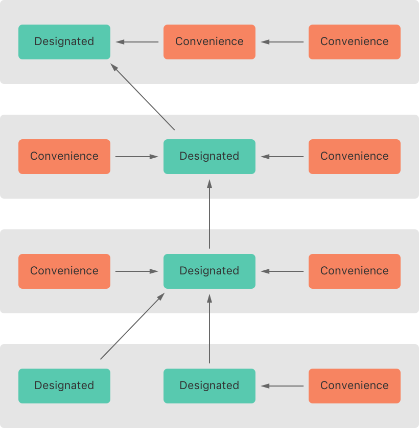

Initialization¶ 初期化¶
Initialization is the process of preparing an instance of a class, structure, or enumeration for use. This process involves setting an initial value for each stored property on that instance and performing any other setup or initialization that’s required before the new instance is ready for use. 初期化は、クラス、構造体、または列挙のインスタンスを使用するために前準備する処理です。この過程は、そのインスタンスの格納プロパティそれぞれに初期値を設定すること、および新しいインスタンスの使用準備が整う前に必要とされる他のあらゆる設定や初期化を行うことを含みます。
You implement this initialization process by defining initializers, which are like special methods that can be called to create a new instance of a particular type. Unlike Objective-C initializers, Swift initializers don’t return a value. Their primary role is to ensure that new instances of a type are correctly initialized before they’re used for the first time. あなたはこの初期化処理をイニシャライザを定義することによって実装します、それは、特定の型の新しいインスタンスをつくるために呼ばれることができる特別なメソッドのようなものです。Objective-Cのイニシャライザと違って、スウィフトのイニシャライザは値を返しません。それらの主要な役割は、ある型の新しいインスタンスが、それらが初めて使われる前に正しく初期化されることを保証することです。
Instances of class types can also implement a deinitializer, which performs any custom cleanup just before an instance of that class is deallocated. For more information about deinitializers, see Deinitialization. クラス型のインスタンスはまた、デイニシャライザを実装することができます、それは、そのクラスのインスタンスの割り当て解除がされる直前に、何らかのあつらえのクリーンアップ作業を実行します。デイニシャライザの詳細については、デイニシャライザを見てください。
Setting Initial Values for Stored Properties¶ 初期値を格納プロパティに設定する¶
Classes and structures must set all of their stored properties to an appropriate initial value by the time an instance of that class or structure is created. Stored properties can’t be left in an indeterminate state. クラスと構造体は、それらの格納プロパティの全てを、そのクラスや構造体のインスタンスがつくられる時には適切な初期値に設定する必要があります。格納プロパティは、不確定な状態のままにされることができません。
You can set an initial value for a stored property within an initializer, or by assigning a default property value as part of the property’s definition. These actions are described in the following sections. あなたは、イニシャライザの内部で、またはそのプロパティの定義の一部として省略時のプロパティの値を代入することによって、格納プロパティのために初期値を設定することができます。これらの行いは、以下の節で記述されます。
Note 注意
When you assign a default value to a stored property, or set its initial value within an initializer, the value of that property is set directly, without calling any property observers. あなたがある格納プロパティに省略時の値を代入する、またはその初期値をイニシャライザの内部で設定するとき、そのプロパティの値は、どんなプロパティオブザーバーも呼び出すことなく、直接に設定されます。
Initializers¶ イニシャライザ¶
Initializers are called to create a new instance of a particular type. In its simplest form, an initializer is like an instance method with no parameters, written using the init keyword:
イニシャライザは、特定の型の新しいインスタンスをつくるために呼ばれます。その最も単純な形式では、イニシャライザはパラメータのないインスタンスメソッドのようです、そしてinitキーワードを使用して書かれます。
- init() {
- // perform some initialization here（ここで何らかの初期化を行う）
- }
The example below defines a new structure called Fahrenheit to store temperatures expressed in the Fahrenheit scale. The Fahrenheit structure has one stored property, temperature, which is of type Double:
下の例は、Fahrenheitと呼ばれる新しい構造体を定義して、華氏尺度で表される温度を格納します。Fahrenheit構造体は、１つの格納プロパティ、temperatureを持ちます、それはDouble型です：
- struct Fahrenheit {
- var temperature: Double
- init() {
- temperature = 32.0
- }
- }
- var f = Fahrenheit()
- print("The default temperature is \(f.temperature)° Fahrenheit")
- // Prints "The default temperature is 32.0° Fahrenheit"（「省略時の温度は華氏32.0°です」を出力します）
The structure defines a single initializer, init, with no parameters, which initializes the stored temperature with a value of 32.0 (the freezing point of water in degrees Fahrenheit).
この構造体は、パラメータのないただ１つのイニシャライザ、initを定義します、それは格納された温度を値32.0（華氏度数での水の氷点）で初期化します。
Default Property Values¶ 省略時のプロパティ値¶
You can set the initial value of a stored property from within an initializer, as shown above. Alternatively, specify a default property value as part of the property’s declaration. You specify a default property value by assigning an initial value to the property when it’s defined. あなたはイニシャライザ内から格納プロパティの初期値を設定することが、上で示されるように、行えます。その代わりの方法として、省略時のプロパティ値をそのプロパティの宣言の一部として指定してください。あなたは、それが定義されるときプロパティに初期値を代入することによって、省略時のプロパティ値を指定します。
Note 注意
If a property always takes the same initial value, provide a default value rather than setting a value within an initializer. The end result is the same, but the default value ties the property’s initialization more closely to its declaration. It makes for shorter, clearer initializers and enables you to infer the type of the property from its default value. The default value also makes it easier for you to take advantage of default initializers and initializer inheritance, as described later in this chapter. あるプロパティが常に同じ初期値をとるならば、イニシャライザ内で値を設定することよりむしろ省略時の値を提供してください。最終的な結果は同じものです、しかし省略時の値は、プロパティの初期化をより密接にその宣言に結び付けます。それは、より短い、より明白なイニシャライザを作り、あなたにその省略時の値からプロパティの型を推論するのを可能にします。省略時の値はまた、あなたが省略時のイニシャライザとイニシャライザ継承を活用することをより簡単にします、そのことはこの章の後で記述されます。
You can write the Fahrenheit structure from above in a simpler form by providing a default value for its temperature property at the point that the property is declared:
あなたは、上記のFahrenheit構造体を、そのtemperatureプロパティのために省略時の値をそのプロパティが宣言される時点で用意することによって、より単純な形式で書くことができます：
- struct Fahrenheit {
- var temperature = 32.0
- }
Customizing Initialization¶ 初期化をカスタマイズする¶
You can customize the initialization process with input parameters and optional property types, or by assigning constant properties during initialization, as described in the following sections. あなたは、以下の節で記述されるように、入力パラメータとオプショナルプロパティ型を使って、または初期化の間に定数プロパティを割り当てることによって、初期化処理を目的に合わせて作り変えることができます。
Initialization Parameters¶ 初期化パラメータ¶
You can provide initialization parameters as part of an initializer’s definition, to define the types and names of values that customize the initialization process. Initialization parameters have the same capabilities and syntax as function and method parameters. あなたは、イニシャライザの定義の一部として初期化パラメータを提供することができます、それによって初期化処理をカスタマイズする値の型と名前を定義します。初期化パラメータは、関数およびメソッドのパラメータと同じ能力と構文を持ちます。
The following example defines a structure called Celsius, which stores temperatures expressed in degrees Celsius. The Celsius structure implements two custom initializers called init(fromFahrenheit:) and init(fromKelvin:), which initialize a new instance of the structure with a value from a different temperature scale:
以下の例は、Celsiusと呼ばれる構造体を定義します、それは、摂氏度数で表される温度を格納します。Celsius構造体は、init(fromFahrenheit:)とinit(fromKelvin:)と呼ばれる２つのあつらえのイニシャライザを実装します、それは、その構造体の新しいインスタンスを異なる温度尺度の値を使って初期化します：
- struct Celsius {
- var temperatureInCelsius: Double
- init(fromFahrenheit fahrenheit: Double) {
- temperatureInCelsius = (fahrenheit - 32.0) / 1.8
- }
- init(fromKelvin kelvin: Double) {
- temperatureInCelsius = kelvin - 273.15
- }
- }
- let boilingPointOfWater = Celsius(fromFahrenheit: 212.0)
- // boilingPointOfWater.temperatureInCelsius is 100.0（boilingPointOfWater.temperatureInCelsiusは、100.0です）
- let freezingPointOfWater = Celsius(fromKelvin: 273.15)
- // freezingPointOfWater.temperatureInCelsius is 0.0（freezingPointOfWater.temperatureInCelsiusは、0.0です）
The first initializer has a single initialization parameter with an argument label of fromFahrenheit and a parameter name of fahrenheit. The second initializer has a single initialization parameter with an argument label of fromKelvin and a parameter name of kelvin. Both initializers convert their single argument into the corresponding Celsius value and store this value in a property called temperatureInCelsius.
最初のイニシャライザは、fromFahrenheitの引数ラベルとfahrenheitのパラメータ名を使うただ１つの初期化パラメータを持ちます。第二のイニシャライザは、fromKelvinの引数ラベルとkelvinのパラメータ名を使うただ１つの初期化パラメータを持ちます。両方のイニシャライザは、それらのただ１つの引数を相当する摂氏の値に変えて、その値をtemperatureInCelsiusと呼ばれるプロパティに保管します。
Parameter Names and Argument Labels¶ パラメータ名と引数ラベル¶
As with function and method parameters, initialization parameters can have both a parameter name for use within the initializer’s body and an argument label for use when calling the initializer. 関数とメソッドのパラメータと同様に、初期化パラメータは、イニシャライザの本文内で使用するためのパラメータ名とイニシャライザを呼ぶ時に使用するための引数ラベルの両方を持つことができます。
However, initializers don’t have an identifying function name before their parentheses in the way that functions and methods do. Therefore, the names and types of an initializer’s parameters play a particularly important role in identifying which initializer should be called. Because of this, Swift provides an automatic argument label for every parameter in an initializer if you don’t provide one. しかし、イニシャライザは、関数とメソッドがするように識別する関数名をその括弧の前に持ちません。したがって、イニシャライザのパラメータの名前と型は、どのイニシャライザが呼ばれなければならないか識別することにおいて特に重要な役割を演じます。これのため、スウィフトは、あなたがそれを独自に提供しないならば、自動的な引数ラベルをイニシャライザのあらゆるパラメータに用意します。
The following example defines a structure called Color, with three constant properties called red, green, and blue. These properties store a value between 0.0 and 1.0 to indicate the amount of red, green, and blue in the color.
以下の例はColorと呼ばれる構造体を定義します、それはred、green、そしてblueと呼ばれる３つの定数プロパティを使います。これらのプロパティは、0.0と1.0の間の値を格納して、その色における赤、緑、および青の量を示します。
Color provides an initializer with three appropriately named parameters of type Double for its red, green, and blue components. Color also provides a second initializer with a single white parameter, which is used to provide the same value for all three color components.
Colorはイニシャライザに、それの赤、緑、および青の構成要素に対する３つの適切に命名された型Doubleのパラメータを提供します。Colorはまた、ただ１つのwhiteパラメータを持つ第２のイニシャライザを提供します、それは３つの色構成要素すべてに同じ値を提供するのに使用されます。
- struct Color {
- let red, green, blue: Double
- init(red: Double, green: Double, blue: Double) {
- self.red = red
- self.green = green
- self.blue = blue
- }
- init(white: Double) {
- red = white
- green = white
- blue = white
- }
- }
Both initializers can be used to create a new Color instance, by providing named values for each initializer parameter:
両方のイニシャライザとも、新しいColorインスタンスを作成するために、各イニシャライザ・パラメータに名前を付けられた値を提供することで、使用されることができます：
- let magenta = Color(red: 1.0, green: 0.0, blue: 1.0)
- let halfGray = Color(white: 0.5)
Note that it isn’t possible to call these initializers without using argument labels. Argument labels must always be used in an initializer if they’re defined, and omitting them is a compile-time error: 引数ラベルを使用することなくこれらのイニシャライザを呼び出すことは可能でない点に注意してください。引数ラベルは、それらが定義されるならば常にイニシャライザで使われなければなりません、そして、それらを省略することはコンパイル時エラーになります：
- let veryGreen = Color(0.0, 1.0, 0.0)
- // this reports a compile-time error - argument labels are required（これはコンパイル時エラーを報告します - 引数ラベルが必要とされます）
Initializer Parameters Without Argument Labels¶ 引数ラベルのないイニシャライザ・パラメータ¶
If you don’t want to use an argument label for an initializer parameter, write an underscore (_) instead of an explicit argument label for that parameter to override the default behavior.
あなたがイニシャライザ・パラメータのために引数ラベルを使うことを望まないならば、そのパラメータに対して明示的な引数ラベルを書くのではなくひとつのアンダーバー（_）を書いて、省略時の挙動をオーバーライドしてください。
Here’s an expanded version of the Celsius example from Initialization Parameters above, with an additional initializer to create a new Celsius instance from a Double value that’s already in the Celsius scale:
ここに上の初期化パラメータからのCelsius例の拡張版があります、それは追加のイニシャライザを使って、既に摂氏尺度であるDouble値から新しいCelsiusインスタンスを作ります。
- struct Celsius {
- var temperatureInCelsius: Double
- init(fromFahrenheit fahrenheit: Double) {
- temperatureInCelsius = (fahrenheit - 32.0) / 1.8
- }
- init(fromKelvin kelvin: Double) {
- temperatureInCelsius = kelvin - 273.15
- }
- init(_ celsius: Double) {
- temperatureInCelsius = celsius
- }
- }
- let bodyTemperature = Celsius(37.0)
- // bodyTemperature.temperatureInCelsius is 37.0（bodyTemperature.temperatureInCelsius は 37.0 です）
The initializer call Celsius(37.0) is clear in its intent without the need for an argument label. It’s therefore appropriate to write this initializer as init(_ celsius: Double) so that it can be called by providing an unnamed Double value.
イニシャライザ呼び出しCelsius(37.0)は、引数ラベルを必要としなくともその意図は明快です。したがって、適切なのはこのイニシャライザをinit(_ celsius: Double)のように書くことであり、それによってそれは名前のないDouble値を提供することで呼び出されることができます。
Optional Property Types¶ オプショナルプロパティ型¶
If your custom type has a stored property that’s logically allowed to have “no value”—perhaps because its value can’t be set during initialization, or because it’s allowed to have “no value” at some later point—declare the property with an optional type. Properties of optional type are automatically initialized with a value of nil, indicating that the property is deliberately intended to have “no value yet” during initialization.
あなたの特注で作った型が論理的に「無い値」を持つことを許される格納プロパティを ― もしかしたらそれの値が初期化の間に設定されることができないかもしれないため、または後の時点でそれが「無い値」を持つことを許されるため ― 持つならば、そのプロパティをオプショナルの型で宣言してください。オプショナルの型のプロパティは、nilの値で自動的に初期化されて、そのプロパティは初期化の時には「まだ無い値」を故意に持つつもりであることを示しています。
The following example defines a class called SurveyQuestion, with an optional String property called response:
以下の例は、responseと呼ばれるオプショナルのStringプロパティで、SurveyQuestionと呼ばれるクラスを定義します：
- class SurveyQuestion {
- var text: String
- var response: String?
- init(text: String) {
- self.text = text
- }
- func ask() {
- print(text)
- }
- }
- let cheeseQuestion = SurveyQuestion(text: "Do you like cheese?")
- cheeseQuestion.ask()
- // Prints "Do you like cheese?"（「あなたはチーズが好きですか？」を出力します）
- cheeseQuestion.response = "Yes, I do like cheese."
The response to a survey question can’t be known until it’s asked, and so the response property is declared with a type of String?, or “optional String”. It’s automatically assigned a default value of nil, meaning “no string yet”, when a new instance of SurveyQuestion is initialized.
意識調査への回答は、それが尋ねられるまでは知られることができません、なのでresponseプロパティはString?の型、すなわち「オプショナルのString」を使って宣言されます。それは、SurveyQuestionの新しいインスタンスは初期化される時に、「まだ無い文字列」を意味する、省略時の値のnilを自動的に代入されます。
Assigning Constant Properties During Initialization¶ 初期化の間に定数プロパティを割り当てる¶
You can assign a value to a constant property at any point during initialization, as long as it’s set to a definite value by the time initialization finishes. Once a constant property is assigned a value, it can’t be further modified. あなたは、それが初期化終了時にある明確な値に設定されさえするならば、ある値を初期化の間のどの時点ででも定数プロパティに割り当てることができます。いったん定数プロパティが値を割り当てられるならば、それはそれ以上変更されることはできません。
Note 注意
For class instances, a constant property can be modified during initialization only by the class that introduces it. It can’t be modified by a subclass. クラスインスタンスのために、定数プロパティは、それを導入するクラスによってのみ初期化の間に修正されることができます。それは、サブクラスによって修正されることができません。
You can revise the SurveyQuestion example from above to use a constant property rather than a variable property for the text property of the question, to indicate that the question doesn’t change once an instance of SurveyQuestion is created. Even though the text property is now a constant, it can still be set within the class’s initializer:
あなたは、上記のSurveyQuestion例を、変数プロパティではなく定数プロパティを質問のtextプロパティのために使うように見直して、その質問は一旦SurveyQuestionのインスタンスが作成されるならば変化しないことを示すことができます。たとえtextプロパティが今や定数であるとしても、それはクラスのイニシャライザの内部ではまだ設定されることができます：
- class SurveyQuestion {
- let text: String
- var response: String?
- init(text: String) {
- self.text = text
- }
- func ask() {
- print(text)
- }
- }
- let beetsQuestion = SurveyQuestion(text: "How about beets?")
- beetsQuestion.ask()
- // Prints "How about beets?"（「赤かぶはどう？」を出力します）
- beetsQuestion.response = "I also like beets. (But not with cheese.)"
Default Initializers¶ 省略時のイニシャライザ¶
Swift provides a default initializer for any structure or class that provides default values for all of its properties and doesn’t provide at least one initializer itself. The default initializer simply creates a new instance with all of its properties set to their default values. スウィフトは、それのもつプロパティの全てに省略時の値を与えて、ともかく１つのイニシャライザもそれ自身では提供しないあらゆる構造体またはクラスのために、省略時のイニシャライザを用意します。省略時のイニシャライザは、単に新しいインスタンスを、そのプロパティの全てをそれらの省略時の値に設定することで作成します。
This example defines a class called ShoppingListItem, which encapsulates the name, quantity, and purchase state of an item in a shopping list:
この例はShoppingListItemと呼ばれるクラスを定義します、それは、ある購入品目リストにおける名前、量、そしてある項目の購入状態といったものをカプセル化します：
- class ShoppingListItem {
- var name: String?
- var quantity = 1
- var purchased = false
- }
- var item = ShoppingListItem()
Because all properties of the ShoppingListItem class have default values, and because it’s a base class with no superclass, ShoppingListItem automatically gains a default initializer implementation that creates a new instance with all of its properties set to their default values. (The name property is an optional String property, and so it automatically receives a default value of nil, even though this value isn’t written in the code.) The example above uses the default initializer for the ShoppingListItem class to create a new instance of the class with initializer syntax, written as ShoppingListItem(), and assigns this new instance to a variable called item.
ShoppingListItemクラスの全てのプロパティ省略時の値を持つことから、そしてそれがスーパークラスを持たない基盤クラスであることから、ShoppingListItemは自動的に省略時のイニシャライザ実装を獲得します、それは、それのプロパティの全てをそれらの省略時の値に設定して、新しいインスタンスを作成します。（nameプロパティはオプショナルのStringプロパティです、なのでそれは自動的に省略時の値のnilを受け取ります、たとえこの値がそのコードに書かれないとしてもです。）上の例は、ShoppingListItemクラスのための省略時のイニシャライザを使って、このクラスの新しいインスタンスを作成します、ShoppingListItem()のように書かれる、イニシャライザ構文の所です、そしてこの新しいインスタンスをitemと呼ばれる変数に代入します。
Memberwise Initializers for Structure Types¶ 構造体型のためのメンバー関連イニシャライザ¶
Structure types automatically receive a memberwise initializer if they don’t define any of their own custom initializers. Unlike a default initializer, the structure receives a memberwise initializer even if it has stored properties that don’t have default values. 構造体型は、それが独自のあつらえのイニシャライザを何ら定義しないならば、自動的にメンバー関連イニシャライザを受け取ります。省略時のイニシャライザと違って、構造体はメンバー関連イニシャライザを受け取ります、たとえそれが省略時の値を持たない格納プロパティを持つとしても。
The memberwise initializer is a shorthand way to initialize the member properties of new structure instances. Initial values for the properties of the new instance can be passed to the memberwise initializer by name. メンバー関連イニシャライザは、新しい構造体インスタンスのメンバープロパティを初期化するための略記方法です。新しいインスタンスのプロパティのための初期値は、名前でメンバー関連イニシャライザに渡されることができます。
The example below defines a structure called Size with two properties called width and height. Both properties are inferred to be of type Double by assigning a default value of 0.0.
下の例は、widthとheightと呼ばれる２つのプロパティをもつSizeと呼ばれる構造体を定義します。両方のプロパティは、省略時の値の0.0を代入することによってDouble型であると推測されます。
The Size structure automatically receives an init(width:height:) memberwise initializer, which you can use to initialize a new Size instance:
Size構造体は自動的にメンバー関連イニシャライザinit(width:height:)を受け取ります、それは、あなたが新しいSizeインスタンスを初期化するために使うことができます：
- struct Size {
- var width = 0.0, height = 0.0
- }
- let twoByTwo = Size(width: 2.0, height: 2.0)
When you call a memberwise initializer, you can omit values for any properties that have default values. In the example above, the Size structure has a default value for both its height and width properties. You can omit either property or both properties, and the initializer uses the default value for anything you omit—for example:
あなたがメンバー関連イニシャライザを呼び出す場合、あなたは省略時の値を持つあらゆるプロパティに対して値を省略できます。上の例において、Size構造体は省略時の値をそれのheightとwidthプロパティの両方に対して持ちます。あなたは、どちらかのプロパティまたは両方のプロパティを省略できます、そしてイニシャライザは省略時の値をあなたが省略するどんなものにも使います — 例えば：
- let zeroByTwo = Size(height: 2.0)
- print(zeroByTwo.width, zeroByTwo.height)
- // Prints "0.0 2.0"
- let zeroByZero = Size()
- print(zeroByZero.width, zeroByZero.height)
- // Prints "0.0 0.0"
Initializer Delegation for Value Types¶ 値型のためのイニシャライザ委任¶
Initializers can call other initializers to perform part of an instance’s initialization. This process, known as initializer delegation, avoids duplicating code across multiple initializers. イニシャライザは、あるインスタンスの初期化の一部を実行するために他のイニシャライザを呼ぶことができます。この処理、イニシャライザ委任として知られるものは、複数のイニシャライザにまたがってコードを繰り返し複製することを避けます。
The rules for how initializer delegation works, and for what forms of delegation are allowed, are different for value types and class types. Value types (structures and enumerations) don’t support inheritance, and so their initializer delegation process is relatively simple, because they can only delegate to another initializer that they provide themselves. Classes, however, can inherit from other classes, as described in Inheritance. This means that classes have additional responsibilities for ensuring that all stored properties they inherit are assigned a suitable value during initialization. These responsibilities are described in Class Inheritance and Initialization below. どのようにイニシャライザ委任が働くか、そしてどんな委任の形式が許されるかの規則は、値型とクラス型で異なります。値型（構造体と列挙）は、継承をサポートしません、なので、それらのイニシャライザ委任プロセスは比較的単純です、なぜなら、それらがそれら自身で提供する別のイニシャライザに委任できるだけだからです。クラスはしかし、継承で記述されるように、他のクラスから継承することができます。これは、クラスが、それが継承する全ての格納プロパティが初期化の間に適切な値を代入されることを確実にすることに対する追加の責任を持つことを意味します。これらの責任は、下記のクラス継承と初期化で記述されます。
For value types, you use self.init to refer to other initializers from the same value type when writing your own custom initializers. You can call self.init only from within an initializer.
値型のために、あなたはself.initを使って、あなた独自のあつらえのイニシャライザを書くとき同じ値型の他のイニシャライザに言及します。あなたは、self.initをイニシャライザ内からだけ呼ぶことができます。
Note that if you define a custom initializer for a value type, you will no longer have access to the default initializer (or the memberwise initializer, if it’s a structure) for that type. This constraint prevents a situation in which additional essential setup provided in a more complex initializer is accidentally circumvented by someone using one of the automatic initializers. あなたがある値型のためにあつらえのイニシャライザを定義するならば、あなたがもはやその型の省略時のイニシャライザに（および、それが構造体の場合には、メンバー関連イニシャライザにも）アクセスをしない点に注意してください。この制約は、あるより複雑なイニシャライザにおいて提供される追加の重要な準備が、自動的なイニシャライザのうちの１つを使う何かによって図らずも回避される状況を防ぎます。
Note 注意
If you want your custom value type to be initializable with the default initializer and memberwise initializer, and also with your own custom initializers, write your custom initializers in an extension rather than as part of the value type’s original implementation. For more information, see Extensions. あなたが、あなたのあつらえの値型に省略時のイニシャライザとメンバー関連イニシャライザで、その上にあなた自身のあつらえのイニシャライザで初期化可能にされて欲しいならば、あなたのあつらえのイニシャライザを値型の元々の実装の一部としてではなく、ある拡張の中で書いてください。詳細は、拡張を見てください。
The following example defines a custom Rect structure to represent a geometric rectangle. The example requires two supporting structures called Size and Point, both of which provide default values of 0.0 for all of their properties:
以下の例は、あつらえのRect構造体を定義して、幾何学的な長方形を表わします。この例は、SizeとPointと呼ばれる２つの補助する構造体を必要とします、その両方はそれらのプロパティすべてに0.0の省略時の値を提供します：
- struct Size {
- var width = 0.0, height = 0.0
- }
- struct Point {
- var x = 0.0, y = 0.0
- }
You can initialize the Rect structure below in one of three ways—by using its default zero-initialized origin and size property values, by providing a specific origin point and size, or by providing a specific center point and size. These initialization options are represented by three custom initializers that are part of the Rect structure’s definition:
あなたは、以下のRect構造体を３つの方法のうちの１つで初期化することができます ― それの省略時の０で初期化されたoriginとsizeプロパティ値を使うことによって、特定の原点とサイズを提供することによって、または特定の中心点とサイズを提供することによって。これらの初期化オプションは、Rect構造体の定義の一部である３つのあつらえのイニシャライザによって表されます：
- struct Rect {
- var origin = Point()
- var size = Size()
- init() {}
- init(origin: Point, size: Size) {
- self.origin = origin
- self.size = size
- }
- init(center: Point, size: Size) {
- let originX = center.x - (size.width / 2)
- let originY = center.y - (size.height / 2)
- self.init(origin: Point(x: originX, y: originY), size: size)
- }
- }
The first Rect initializer, init(), is functionally the same as the default initializer that the structure would have received if it didn’t have its own custom initializers. This initializer has an empty body, represented by an empty pair of curly braces {}. Calling this initializer returns a Rect instance whose origin and size properties are both initialized with the default values of Point(x: 0.0, y: 0.0) and Size(width: 0.0, height: 0.0) from their property definitions:
最初のRectイニシャライザ、init()は、構造体が独自のあつらえのイニシャライザを持たない場合に受け取る省略時のイニシャライザと機能的に同じものです。このイニシャライザは、一対の空の波括弧{}によって表される空の本文を持ちます。このイニシャライザを呼ぶことはRectインスタンスを返します、それは、originとsizeプロパティが両方ともそれらのプロパティ定義からの省略時の値のPoint(x: 0.0, y: 0.0)とSize(width: 0.0, height: 0.0)で初期化されるものです：
- let basicRect = Rect()
- // basicRect's origin is (0.0, 0.0) and its size is (0.0, 0.0)（centerRectの原点は(0.0, 0.0)、そのサイズは(0.0, 0.0)です）
The second Rect initializer, init(origin:size:), is functionally the same as the memberwise initializer that the structure would have received if it didn’t have its own custom initializers. This initializer simply assigns the origin and size argument values to the appropriate stored properties:
二番目のRectイニシャライザ、init(origin:size:)は、構造体が独自のあつらえのイニシャライザを持たない場合に受け取る省略時のメンバー関連イニシャライザと機能的に同じものです。このイニシャライザは、単に引数値originとsizeを適切な格納プロパティに代入します：
- let originRect = Rect(origin: Point(x: 2.0, y: 2.0),
- size: Size(width: 5.0, height: 5.0))
- // originRect's origin is (2.0, 2.0) and its size is (5.0, 5.0)（centerRectの原点は (2.0, 2.0)、そのサイズは(5.0, 5.0)です）
The third Rect initializer, init(center:size:), is slightly more complex. It starts by calculating an appropriate origin point based on a center point and a size value. It then calls (or delegates) to the init(origin:size:) initializer, which stores the new origin and size values in the appropriate properties:
第３のRectイニシャライザ、init(center:size:)は、わずかにより複雑です。それは、center地点とsize値に基づいて適切な原点を計算することによって始まります。それは、それからinit(origin:size:)イニシャライザに呼び出し（または委任）をします、それは、新しい原点とサイズ値を適切なプロパティに格納します：
- let centerRect = Rect(center: Point(x: 4.0, y: 4.0),
- size: Size(width: 3.0, height: 3.0))
- // centerRect's origin is (2.5, 2.5) and its size is (3.0, 3.0)（centerRectの原点は(2.5, 2.5)、そのサイズは(3.0, 3.0)です）
The init(center:size:) initializer could have assigned the new values of origin and size to the appropriate properties itself. However, it’s more convenient (and clearer in intent) for the init(center:size:) initializer to take advantage of an existing initializer that already provides exactly that functionality.
init(center:size:)イニシャライザは、それ自体でoriginとsizeの新しい値を適切なプロパティに代入することができました。しかし、すでに正確にその機能性を提供する既存のイニシャライザを利用するほうが、init(center:size:)イニシャライザにとってより便利です（そして意図においてより明白です）。
Note 注意
For an alternative way to write this example without defining the init() and init(origin:size:) initializers yourself, see Extensions.
init()とinit(origin:size:)イニシャライザをあなた自身で定義することなくこの例を書く代わりの方法のために、拡張を見てください。
Class Inheritance and Initialization¶ クラス継承と初期化¶
All of a class’s stored properties—including any properties the class inherits from its superclass—must be assigned an initial value during initialization. あるクラスの全ての格納プロパティは ― そのクラスがそれのスーパークラスから継承するあらゆるプロパティを含めて ― 初期化の間に初期値を代入される必要があります。
Swift defines two kinds of initializers for class types to help ensure all stored properties receive an initial value. These are known as designated initializers and convenience initializers. スウィフトは、クラス型のために２種類のイニシャライザを定義して、全ての格納プロパティが初期値を受け取ることを確実にするのを手伝います。これらは、指定イニシャライザと便宜イニシャライザとして知られています。
Designated Initializers and Convenience Initializers¶ 指定イニシャライザと便宜イニシャライザ¶
Designated initializers are the primary initializers for a class. A designated initializer fully initializes all properties introduced by that class and calls an appropriate superclass initializer to continue the initialization process up the superclass chain. 指定イニシャライザは、あるクラスのための主要なイニシャライザです。指定イニシャライザは、そのクラスによって導入される全てのプロパティを完全に初期化して、適切なスーパークラスのイニシャライザを呼んで初期化プロセスを続けていきスーパークラス連鎖を上っていきます。
Classes tend to have very few designated initializers, and it’s quite common for a class to have only one. Designated initializers are “funnel” points through which initialization takes place, and through which the initialization process continues up the superclass chain. クラスはほとんど指定イニシャライザを持たない傾向があります、そして、あるクラスが１つだけしか持たないことは全く普通です。指定イニシャライザは、「漏斗」地点です、そこを通して初期化が行われ、そこを通して初期化処理がスーパークラス連鎖を上って続いていきます。
Every class must have at least one designated initializer. In some cases, this requirement is satisfied by inheriting one or more designated initializers from a superclass, as described in Automatic Initializer Inheritance below. あらゆるクラスは、少なくとも１つの指定イニシャライザを持たなければなりません。若干の場合には、この必要条件は、下記の自動的なイニシャライザ継承で記述されるように、あるスーパークラスから１つ以上の指定イニシャライザを継承することによって満たされます。
Convenience initializers are secondary, supporting initializers for a class. You can define a convenience initializer to call a designated initializer from the same class as the convenience initializer with some of the designated initializer’s parameters set to default values. You can also define a convenience initializer to create an instance of that class for a specific use case or input value type. 便宜イニシャライザは副次的なもので、あるクラスのためのイニシャライザを支援します。あなたは、ある便宜イニシャライザを定義して、同じクラスからある指定イニシャライザをその便宜イニシャライザとして呼び出し、その指定イニシャライザのパラメータのいくつかを省略時の値に設定することができます。あなたは、また、ある便宜イニシャライザを定義して、そのクラスのインスタンスを特定の使用状況のために作成したり、値型を入力することができます。
You don’t have to provide convenience initializers if your class doesn’t require them. Create convenience initializers whenever a shortcut to a common initialization pattern will save time or make initialization of the class clearer in intent. あなたのクラスがそれらを必要としないならば、あなたは便宜イニシャライザを提供する必要はありません。共通の初期化の繰り返しに対する近道が時間を節約したり、そのクラスの初期化を意図においてより明白にするときはいつでも、便宜イニシャライザをつくってください。
Syntax for Designated and Convenience Initializers¶ 指定および便宜イニシャライザのための構文¶
Designated initializers for classes are written in the same way as simple initializers for value types: クラスのための指定イニシャライザは、値型のための単純なイニシャライザと同様に書かれます：
- init(parameters) {
- statements
- }
Convenience initializers are written in the same style, but with the convenience modifier placed before the init keyword, separated by a space:
便宜イニシャライザは同じ形式で書かれます、しかしconvenience修飾子がinitキーワードの前に空白で区切って置かれます：
- convenience init(parameters) {
- statements
- }
Initializer Delegation for Class Types¶ クラス型のためのイニシャライザ委任¶
To simplify the relationships between designated and convenience initializers, Swift applies the following three rules for delegation calls between initializers: 指定と便宜イニシャライザの間の関係を単純化するために、スウィフトは以下の３つの規則をイニシャライザ間の委任呼び出しに対して適用します：
- Rule 1 規則１
- A designated initializer must call a designated initializer from its immediate superclass. 指定イニシャライザは、その直接のスーパークラスから指定イニシャライザを呼ばなければなりません。
- Rule 2 規則２
- A convenience initializer must call another initializer from the same class. 便宜イニシャライザは、別のイニシャライザを同じクラスから呼ばなければなりません。
- Rule 3 規則３
- A convenience initializer must ultimately call a designated initializer. 便宜イニシャライザは、最終的に指定イニシャライザを呼ばなければなりません。
A simple way to remember this is: これを覚えている単純な方法は、以下の通りです：
- Designated initializers must always delegate up. 指定イニシャライザは、常に上に委任しなければなりません。
- Convenience initializers must always delegate across. 便宜イニシャライザは、常に横に委任しなければなりません。
These rules are illustrated in the figure below: これらの規則は、下の図で説明されます：

Here, the superclass has a single designated initializer and two convenience initializers. One convenience initializer calls another convenience initializer, which in turn calls the single designated initializer. This satisfies rules 2 and 3 from above. The superclass doesn’t itself have a further superclass, and so rule 1 doesn’t apply. ここでは、スーパークラスは１つの指定イニシャライザと２つの便宜イニシャライザを持ちます。１つの便宜イニシャライザは、別の便宜イニシャライザを呼びます、それは、今度は１つだけある指定イニシャライザを呼びます。これは、上記の規則２と３を満たします。このスーパークラスにはそれ自身には更にスーパークラスをもちません、なので規則１は適用されません。
The subclass in this figure has two designated initializers and one convenience initializer. The convenience initializer must call one of the two designated initializers, because it can only call another initializer from the same class. This satisfies rules 2 and 3 from above. Both designated initializers must call the single designated initializer from the superclass, to satisfy rule 1 from above. この図の中のサブクラスは、２つの指定イニシャライザと１つの便宜イニシャライザを持ちます。便宜イニシャライザは、２つの指定イニシャライザのうちの１つを呼ぶに違いありません、なぜなら、それが同じクラスから別のイニシャライザを呼ぶことができるだけだからです。これは、上記の規則２と３を満たします。上記の規則１を満たすために、両方の指定イニシャライザは、スーパークラスからその１つだけある指定イニシャライザを呼ばなければなりません。
Note 注意
These rules don’t affect how users of your classes create instances of each class. Any initializer in the diagram above can be used to create a fully initialized instance of the class they belong to. The rules only affect how you write the implementation of the class’s initializers. これらの規則は、あなたのクラスのユーザーが各クラスのインスタンスを作成する方法に影響を及ぼしません。上の図の中のどんなイニシャライザでも、それらが属しているクラスの充分に初期化されたインスタンスをつくるために使用されることができます。これらの規則は、あなたがクラスのイニシャライザの実装を書く方法に影響を及ぼすだけです。
The figure below shows a more complex class hierarchy for four classes. It illustrates how the designated initializers in this hierarchy act as “funnel” points for class initialization, simplifying the interrelationships among classes in the chain: 下の図は、４つのクラスのためのより複雑なクラス階層を示します。それは、この階層の中の指定イニシャライザが、どのようにクラス初期化のために「漏斗」地点の働きをして、この連鎖におけるクラス間の相互関係を単純化しているかを図示します：
Two-Phase Initialization¶ ２段階初期化¶
Class initialization in Swift is a two-phase process. In the first phase, each stored property is assigned an initial value by the class that introduced it. Once the initial state for every stored property has been determined, the second phase begins, and each class is given the opportunity to customize its stored properties further before the new instance is considered ready for use. スウィフトでのクラス初期化は、２段階処理です。最初の段階では、各格納プロパティは、それを導入したクラスによって、初期値を代入されます。一旦あらゆる格納プロパティのための最初の状態が決定されるならば、第２の段階が始まります、そして各クラスは、新しいインスタンスが使用する準備ができているとみなされる前に、さらにその格納プロパティを好みに合わせて作り変える機会を与えられます。
The use of a two-phase initialization process makes initialization safe, while still giving complete flexibility to each class in a class hierarchy. Two-phase initialization prevents property values from being accessed before they’re initialized, and prevents property values from being set to a different value by another initializer unexpectedly. ２段階初期化処理の使用は初期化を安全にします、その一方でさらに、クラス階層において各クラスに完全な柔軟性を与えます。２段階初期化は、プロパティ値が初期化される前にアクセスされるのを妨げます、それによってプロパティ値が思いもよらず別のイニシャライザによって異なる値に設定されるのを防ぎます。
Note 注意
Swift’s two-phase initialization process is similar to initialization in Objective-C. The main difference is that during phase 1, Objective-C assigns zero or null values (such as 0 or nil) to every property. Swift’s initialization flow is more flexible in that it lets you set custom initial values, and can cope with types for which 0 or nil isn’t a valid default value.
スウィフトの２段階初期化プロセスは、Objective-Cでの初期化に似ています。主な違いは、段階１の間に、Objective-Cがゼロまたは無効な値（例えば0またはnil）をあらゆるプロパティに代入するということです。それがあなたに好みに合わせた初期値を設定させて、0またはnilが有効な省略時の値でない型に対処することができるという点で、スウィフトの初期化の流れはより柔軟です。
Swift’s compiler performs four helpful safety-checks to make sure that two-phase initialization is completed without error: スウィフトのコンパイラは、２段階初期化がエラーなしで完了されることを確認するために４つの役に立つ安全点検を実行します：
- Safety check 1 安全点検１
- A designated initializer must ensure that all of the properties introduced by its class are initialized before it delegates up to a superclass initializer. 指定イニシャライザは、それがスーパークラスのイニシャライザへと委任する前に、そのクラスによって導入されるプロパティの全てが初期化されることを確実にしなければなりません。
As mentioned above, the memory for an object is only considered fully initialized once the initial state of all of its stored properties is known. In order for this rule to be satisfied, a designated initializer must make sure that all of its own properties are initialized before it hands off up the chain. 上で言及したように、いったんその格納プロパティの全ての最初の状態が知られる場合にのみ、あるオブジェクトに対するメモリが充分に初期化されたとみなされます。この規則が満たされるために、指定イニシャライザは、それがその連鎖を上って手渡す前に、それ自身のプロパティの全てが初期化されることを確認しなければなりません。
- Safety check 2 安全点検２
- A designated initializer must delegate up to a superclass initializer before assigning a value to an inherited property. If it doesn’t, the new value the designated initializer assigns will be overwritten by the superclass as part of its own initialization. 指定イニシャライザは、継承されたプロパティに代入する前にスーパークラスのイニシャライザへ委任しなければなりません。それがそうしないならば、指定イニシャライザが代入する新しい値は、スーパークラスによってそれ自身の初期化の一部として上書きされます。
- Safety check 3 安全点検３
- A convenience initializer must delegate to another initializer before assigning a value to any property (including properties defined by the same class). If it doesn’t, the new value the convenience initializer assigns will be overwritten by its own class’s designated initializer. 便宜イニシャライザは、値を何らかのプロパティ（同じクラスによって定義されるプロパティを含む）に代入する前に、別のイニシャライザに委任しなければなりません。それがそうしないならば、便宜イニシャライザが代入する新しい値は、それ自身のクラスの指定イニシャライザによって上書きされます。
- Safety check 4 安全点検４
- An initializer can’t call any instance methods, read the values of any instance properties, or refer to
selfas a value until after the first phase of initialization is complete. イニシャライザは、初期化の最初の段階が完了するまで、どんなインスタンスメソッドも呼ぶこと、どんなインスタンスプロパティの値も読むこと、またはselfをひとつの値として参照することができません。
The class instance isn’t fully valid until the first phase ends. Properties can only be accessed, and methods can only be called, once the class instance is known to be valid at the end of the first phase. 第１段階が終わるまで、クラスインスタンスは充分に有効ではありません。一旦クラスインスタンスが第１段階の終わりに有効であるということを知られる場合にのみ、プロパティはアクセスされることができ、そしてメソッドは呼ばれることができます。
Here’s how two-phase initialization plays out, based on the four safety checks above: ２段階初期化が、上の４つの安全点検に基づいて最後までやり終える方法がここにあります：
Phase 1 第１段階
- A designated or convenience initializer is called on a class. 指定または便宜イニシャライザが、あるクラスで呼ばれます。
- Memory for a new instance of that class is allocated. The memory isn’t yet initialized. そのクラスの新しいインスタンスに対するメモリが割り当てられます。そのメモリは、まだ初期化されません。
- A designated initializer for that class confirms that all stored properties introduced by that class have a value. The memory for these stored properties is now initialized. そのクラスのための指定イニシャライザは、そのクラスによって導入される全ての格納プロパティが値を持つことを確かめます。これらの格納プロパティに対するメモリは、今や初期化されます。
- The designated initializer hands off to a superclass initializer to perform the same task for its own stored properties. 指定イニシャライザは、そのスーパークラスのイニシャライザに、それ自身の格納プロパティに対して同じ作業を実行するように任せます。
- This continues up the class inheritance chain until the top of the chain is reached. これは、クラス継承連鎖を上って、その連鎖の最上部に着くまで続きます。
- Once the top of the chain is reached, and the final class in the chain has ensured that all of its stored properties have a value, the instance’s memory is considered to be fully initialized, and phase 1 is complete. いったん連鎖の最上部に届き、そして連鎖の中の最終的なクラスがその格納プロパティの全てが値を持つことを確実にしたならば、インスタンスのメモリは充分に初期化されるとみなされます、そして、第１段階は完了です。
Phase 2 第２段階
- Working back down from the top of the chain, each designated initializer in the chain has the option to customize the instance further. Initializers are now able to access
selfand can modify its properties, call its instance methods, and so on. 連鎖の最上部から逆に階層を下って、連鎖の中の各指定イニシャライザは、さらにインスタンスを好みに合わせて作り変える選択肢を持ちます。イニシャライザは、今ではselfにアクセスすることができます、そしてそれのプロパティを修正すること、それのインスタンスをメソッドを呼び出すこと、などが行えます。 - Finally, any convenience initializers in the chain have the option to customize the instance and to work with
self. 最後に、連鎖の中のあらゆる便宜イニシャライザは、インスタンスを好みに合わせて作り変えるために、selfを扱うために選択肢を持ちます。
Here’s how phase 1 looks for an initialization call for a hypothetical subclass and superclass: 第１段階がある仮定のサブクラスとスーパークラスのための初期化呼び出しを捜す方法がここにあります：
In this example, initialization begins with a call to a convenience initializer on the subclass. This convenience initializer can’t yet modify any properties. It delegates across to a designated initializer from the same class. この例では、初期化はサブクラス上での便宜イニシャライザへの呼び出しから始まります。この便宜イニシャライザは、まだどのプロパティも修正することはできません。それは、横の同じクラスの指定イニシャライザに向かって委任します。
The designated initializer makes sure that all of the subclass’s properties have a value, as per safety check 1. It then calls a designated initializer on its superclass to continue the initialization up the chain. 指定イニシャライザは、安全検査１のように、サブクラスのプロパティの全てが値を持つことを確認します。それはそれから、連鎖を上って初期化を続けるために、そのスーパークラス上で指定イニシャライザを呼びます。
The superclass’s designated initializer makes sure that all of the superclass properties have a value. There are no further superclasses to initialize, and so no further delegation is needed. スーパークラスの指定イニシャライザは、スーパークラスのプロパティの全てが値を持つことを確認します。初期化するための更なるスーパークラスはありません、なので、更なる委任は必要ありません。
As soon as all properties of the superclass have an initial value, its memory is considered fully initialized, and phase 1 is complete. スーパークラスの全てのプロパティが初期値を持つとすぐに、そのメモリは完全に初期化されるとみなされます、そして第１段階は完了します。
Here’s how phase 2 looks for the same initialization call: 第２段階が同じ初期化呼び出しを捜す方法は、ここにあります：

The superclass’s designated initializer now has an opportunity to customize the instance further (although it doesn’t have to). スーパークラスの指定イニシャライザは、現在、さらにインスタンスを好みに合わせて作り返る機会があります（しかしながら、それはそうしなければならない訳ではない）。
Once the superclass’s designated initializer is finished, the subclass’s designated initializer can perform additional customization (although again, it doesn’t have to). 一旦スーパークラスの指定イニシャライザが作業をし終えるならば、サブクラスの指定イニシャライザは追加の改良を実行することができます（しかし再び、そうしなければならない訳ではない）。
Finally, once the subclass’s designated initializer is finished, the convenience initializer that was originally called can perform additional customization. 最後に、一旦サブクラスの指定イニシャライザが作業をし終えるならば、最初に呼ばれた便宜イニシャライザは追加の特注処理を実行することができます。
Initializer Inheritance and Overriding¶ イニシャライザの継承およびオーバーライド¶
Unlike subclasses in Objective-C, Swift subclasses don’t inherit their superclass initializers by default. Swift’s approach prevents a situation in which a simple initializer from a superclass is inherited by a more specialized subclass and is used to create a new instance of the subclass that isn’t fully or correctly initialized. Objective-Cでのサブクラスとは異なり、スウィフトのサブクラスは、特に何もしなくてもそれらのスーパークラスのイニシャライザを継承します。スウィフトの取り組み方は、スーパークラスのもつ単純なイニシャライザがより特殊化されたサブクラスによって継承されて、充分にまたは正しく初期化されない状態の、サブクラスの新しいインスタンスをつくるのに使われる状況を防ぎます。
Note 注意
Superclass initializers are inherited in certain circumstances, but only when it’s safe and appropriate to do so. For more information, see Automatic Initializer Inheritance below. スーパークラスのイニシャライザはある特定の状況において継承されます、しかしそれが安全にそして適切にそうできる時だけです。更なる情報は、以下の自動的なイニシャライザ継承を見てください。
If you want a custom subclass to present one or more of the same initializers as its superclass, you can provide a custom implementation of those initializers within the subclass. あなたが、あるあつらえのサブクラスにそれのスーパークラスと同じイニシャライザがひとつ以上存在することを望むならば、あなたはそれらのイニシャライザのあつらえの実装をそのサブクラスにおいて提供することができます。
When you write a subclass initializer that matches a superclass designated initializer, you are effectively providing an override of that designated initializer. Therefore, you must write the override modifier before the subclass’s initializer definition. This is true even if you are overriding an automatically provided default initializer, as described in Default Initializers.
あなたがスーパークラスの指定イニシャライザと一致するあるサブクラス・イニシャライザを書く時、あなたは事実上その指定イニシャライザのオーバーライドを提供しています。したがって、あなたはoverride修飾子をそのサブクラスのイニシャライザ定義の前に書かなければなりません。これは、省略時のイニシャライザで記述されるように、あなたが自動的に提供される省略時のイニシャライザをオーバーライドしている場合にさえもあてはまります。
As with an overridden property, method or subscript, the presence of the override modifier prompts Swift to check that the superclass has a matching designated initializer to be overridden, and validates that the parameters for your overriding initializer have been specified as intended.
オーバーライドされるプロパティ、メソッドや添え字を書く時と同様に、override修飾子の存在はスウィフトにスーパークラスが一致している、オーバーライドされる指定イニシャライザを持つのを確認すること、そしてあなたがオーバーライドするイニシャライザのパラメータが意図されるように指定されてしまっているのを検証することを促します。
Note 注意
You always write the override modifier when overriding a superclass designated initializer, even if your subclass’s implementation of the initializer is a convenience initializer.
あなたはスーパークラスの指定イニシャライザをオーバーライドする時に常にoverride修飾子を書きます、そのイニシャライザのあなたのサブクラスでの実装が便宜イニシャライザであるとしてもです。
Conversely, if you write a subclass initializer that matches a superclass convenience initializer, that superclass convenience initializer can never be called directly by your subclass, as per the rules described above in Initializer Delegation for Class Types. Therefore, your subclass is not (strictly speaking) providing an override of the superclass initializer. As a result, you don’t write the override modifier when providing a matching implementation of a superclass convenience initializer.
逆に言えば、上記のクラス型のためのイニシャライザ委任で記述される規則どおりに、あなたがスーパークラスの便宜イニシャライザに一致するサブクラスのイニシャライザを書くならば、そのスーパークラスの便宜イニシャライザは直接にあなたのサブクラスによって呼び出されることが決してできません。それゆえに、あなたのサブクラスはスーパークラスのイニシャライザのオーバーライドを（厳密に言えば）提供していません。結果として、あなたはスーパークラスの便宜イニシャライザに一致する実装を提供している時にoverride修飾子を書きません。
The example below defines a base class called Vehicle. This base class declares a stored property called numberOfWheels, with a default Int value of 0. The numberOfWheels property is used by a computed property called description to create a String description of the vehicle’s characteristics:
下の例は、Vehicleと呼ばれる基盤クラスを定義します。この基盤クラスはnumberOfWheelsと呼ばれる格納プロパティを、省略時の値としてInt値0を使って、宣言します。numberOfWheelsプロパティはdescriptionと呼ばれる計算プロパティによって使用されて、この乗り物の特徴のあるStringの解説を作成します：
- class Vehicle {
- var numberOfWheels = 0
- var description: String {
- return "\(numberOfWheels) wheel(s)"
- }
- }
The Vehicle class provides a default value for its only stored property, and doesn’t provide any custom initializers itself. As a result, it automatically receives a default initializer, as described in Default Initializers. The default initializer (when available) is always a designated initializer for a class, and can be used to create a new Vehicle instance with a numberOfWheels of 0:
Vehicleクラスは、それの格納プロパティのためにのみ省略時の値を提供します、そしてそれ自身では何らあつらえのイニシャライザを提供しません。結果として、省略時のイニシャライザで記述されるように、それは自動的に省略時のイニシャライザを受け取ります。省略時のイニシャライザは（利用可能な場合は）、常にクラスのための指定イニシャライザです、そして0のnumberOfWheelsをもつ新しいVehicleインスタンスを作成するために使用されることができます：
- let vehicle = Vehicle()
- print("Vehicle: \(vehicle.description)")
- // Vehicle: 0 wheel(s)（乗り物: ０輪）
The next example defines a subclass of Vehicle called Bicycle:
次の例は、Bicycleと呼ばれるVehicleのサブクラスを定義します：
- class Bicycle: Vehicle {
- override init() {
- super.init()
- numberOfWheels = 2
- }
- }
The Bicycle subclass defines a custom designated initializer, init(). This designated initializer matches a designated initializer from the superclass of Bicycle, and so the Bicycle version of this initializer is marked with the override modifier.
Bicycleサブクラスはあつらえの指定イニシャライザ、init()を定義します。この指定イニシャライザはBicycleのスーパークラスでのある指定イニシャライザと一致します、なのでこのイニシャライザのBicycle改変板はoverride修飾子で印されます。
The init() initializer for Bicycle starts by calling super.init(), which calls the default initializer for the Bicycle class’s superclass, Vehicle. This ensures that the numberOfWheels inherited property is initialized by Vehicle before Bicycle has the opportunity to modify the property. After calling super.init(), the original value of numberOfWheels is replaced with a new value of 2.
Bicycleのためのinit()イニシャライザは、super.init()を呼ぶことによって始まります、それは、Bicycleクラスのスーパークラス、Vehicleのための省略時のイニシャライザを呼び出します。これは継承されたプロパティnumberOfWheelsが、Bicycleがそのプロパティを変更する機会を得る前に、Vehicleによってイニシャライズされることを確実にします。super.init()の呼び出しの後、numberOfWheelsのもとの値は新しい値の2で置き換えられます。
If you create an instance of Bicycle, you can call its inherited description computed property to see how its numberOfWheels property has been updated:
あなたがBicycleのインスタンスを作成するならば、あなたはそれの継承されたdescription計算プロパティを呼び出して、どのようにそれのnumberOfWheelsプロパティが更新されたか見ることができます：
- let bicycle = Bicycle()
- print("Bicycle: \(bicycle.description)")
- // Bicycle: 2 wheel(s)（自転車: ２輪）
If a subclass initializer performs no customization in phase 2 of the initialization process, and the superclass has a zero-argument designated initializer, you can omit a call to super.init() after assigning values to all of the subclass’s stored properties.
サブクラスのイニシャライザが初期化過程の第２段階においてなんら特注の挙動を実行しない、そしてスーパークラスがゼロ個引数の指定イニシャライザを持つならば、あなたはサブクラスの持つ格納プロパティの全てに値を割り当てた後、super.init()の呼び出しを省略できます。
This example defines another subclass of Vehicle, called Hoverboard. In its initializer, the Hoverboard class sets only its color property. Instead of making an explicit call to super.init(), this initializer relies on an implicit call to its superclass’s initializer to complete the process.
この例は、もう１つVehicleのサブクラスを定義します、それはHoverboardと呼ばれます。そのイニシャライザにおいて、Hoverboardクラスはそれのcolorプロパティのみを設定します。super.init()への明示的な呼び出しをする代わりに、このイニシャライザはそれのスーパークラスの持つイニシャライザへの暗黙的な呼び出しを当てにすることで、その過程を完了します。
- class Hoverboard: Vehicle {
- var color: String
- init(color: String) {
- self.color = color
- // super.init() implicitly called here（super.init() が暗黙的にここで呼び出されます）
- }
- override var description: String {
- return "\(super.description) in a beautiful \(color)"
- }
- }
An instance of Hoverboard uses the default number of wheels supplied by the Vehicle initializer.
Hoverboardのインスタンスは、Vehicleイニシャライザによって提供される省略時の車輪数を使います。
- let hoverboard = Hoverboard(color: "silver")
- print("Hoverboard: \(hoverboard.description)")
- // Hoverboard: 0 wheel(s) in a beautiful silver（ホバーボード: ０個の車輪、美しい銀色で）
Note 注意
Subclasses can modify inherited variable properties during initialization, but can’t modify inherited constant properties. サブクラスは、初期化の間に継承された変数プロパティを修正することできます、しかし継承された定数プロパティを変更することはできません。
Automatic Initializer Inheritance¶ 自動的なイニシャライザ継承¶
As mentioned above, subclasses don’t inherit their superclass initializers by default. However, superclass initializers are automatically inherited if certain conditions are met. In practice, this means that you don’t need to write initializer overrides in many common scenarios, and can inherit your superclass initializers with minimal effort whenever it’s safe to do so. 上で述べたように、サブクラスは何もしなければそれらのスーパークラスのイニシャライザを継承しません。しかし、スーパークラスのイニシャライザは、決まった条件が満たされるならば、自動的に継承されます。実際問題として、これは、あなたが多くの通常の状況ではイニシャライザのオーバーライドを書く必要がなく、そしてそれが安全にそうできる時はいつでも最小の努力であなたのスーパークラスのイニシャライザを継承することができることを意味します。
Assuming that you provide default values for any new properties you introduce in a subclass, the following two rules apply: あなたが省略時の値をあなたがサブクラスで導入するあらゆる新しいプロパティに用意すると仮定して、以下の２つの規則が適用されます：
- Rule 1 規則１
- If your subclass doesn’t define any designated initializers, it automatically inherits all of its superclass designated initializers. あなたのサブクラスがまったく指定イニシャライザを定義しないならば、それは自動的にそれのスーパークラスの指定イニシャライザの全てを継承します。
- Rule 2 規則２
- If your subclass provides an implementation of all of its superclass designated initializers—either by inheriting them as per rule 1, or by providing a custom implementation as part of its definition—then it automatically inherits all of the superclass convenience initializers. もしあなたのサブクラスがそれのスーパークラスの指定イニシャライザの実装の全てを ― 規則１に従ってそれらを継承することによって、またはあつらえの実装をそれの定義の一部として提供することによってのどちらかで ― 提供するならば、その時それは自動的にスーパークラスの便宜イニシャライザの全てを継承します。
These rules apply even if your subclass adds further convenience initializers. これらの規則は、たとえあなたのサブクラスが更なる便宜イニシャライザを加えるとしてもあてはまります。
Note 注意
A subclass can implement a superclass designated initializer as a subclass convenience initializer as part of satisfying rule 2. サブクラスは、規則２を満たすことの一部として、スーパークラスの指定イニシャライザをサブクラスの便宜イニシャライザとして実装することができます。
Designated and Convenience Initializers in Action¶ 指定および便宜イニシャライザの動作¶
The following example shows designated initializers, convenience initializers, and automatic initializer inheritance in action. This example defines a hierarchy of three classes called Food, RecipeIngredient, and ShoppingListItem, and demonstrates how their initializers interact.
以下の例は、指定イニシャライザ、便宜イニシャライザ、そして自動的なイニシャライザ継承の動作を示します。この例は、Food、RecipeIngredient、そしてShoppingListItemと呼ばれる３つのクラスの階層を定義して、それらのイニシャライザが相互に作用する方法を示します。
The base class in the hierarchy is called Food, which is a simple class to encapsulate the name of a foodstuff. The Food class introduces a single String property called name and provides two initializers for creating Food instances:
この階層構造における基盤クラスはFoodと呼ばれています、それは、食品の名前をカプセル化する単純なクラスです。Foodクラスは、nameと呼ばれる１つのStringプロパティを導入して、２つのイニシャライザをFoodインスタンスをつくるために提供します：
- class Food {
- var name: String
- init(name: String) {
- self.name = name
- }
- convenience init() {
- self.init(name: "[Unnamed]")
- }
- }
The figure below shows the initializer chain for the Food class:
下の図は、Foodクラスのためのイニシャライザ連鎖を示します：
Classes don’t have a default memberwise initializer, and so the Food class provides a designated initializer that takes a single argument called name. This initializer can be used to create a new Food instance with a specific name:
これらのクラスには省略時のメンバー関連イニシャライザがありません、なので、Foodクラスはnameと呼ばれる１つの引数をとる指定イニシャライザを提供します。このイニシャライザが、ある特定の名前を使って新しいFoodインスタンスをつくるために使われることができます：
- let namedMeat = Food(name: "Bacon")
- // namedMeat's name is "Bacon"（nameMeatの名前は「ベーコン」です）
The init(name: String) initializer from the Food class is provided as a designated initializer, because it ensures that all stored properties of a new Food instance are fully initialized. The Food class doesn’t have a superclass, and so the init(name: String) initializer doesn’t need to call super.init() to complete its initialization.
init(name: String)イニシャライザは、このFoodクラス由来で、指定イニシャライザとして提供されます、なぜならそれは新しいFoodインスタンスのすべての格納プロパティが完全に初期化されるのを確実にするからです。Foodクラスには、スーパークラスがありません、なので、init(name: String)イニシャライザはその初期化を完了するためにsuper.init()を呼ぶ必要がありません。
The Food class also provides a convenience initializer, init(), with no arguments. The init() initializer provides a default placeholder name for a new food by delegating across to the Food class’s init(name: String) with a name value of [Unnamed]:
Foodクラスはまた、引数のない便宜イニシャライザ、init()を提供します。init()イニシャライザは、Foodクラスのinit(name: String)に[Unnamed]のname値を使って横に委任することで、省略時のプレースホルダ名を新しい食物のために用意します：
- let mysteryMeat = Food()
- // mysteryMeat's name is "[Unnamed]"（nameMeatの名前は「[Unnamed]」です）
The second class in the hierarchy is a subclass of Food called RecipeIngredient. The RecipeIngredient class models an ingredient in a cooking recipe. It introduces an Int property called quantity (in addition to the name property it inherits from Food) and defines two initializers for creating RecipeIngredient instances:
この階層構造における第二のクラスは、RecipeIngredientと呼ばれるFoodのサブクラスです。RecipeIngredientクラスは、料理のレシピの材料をモデル化します。それは、quantityと呼ばれるIntプロパティ（加えてそれがFoodから受け継ぐnameプロパティ）を導入して、そしてRecipeIngredientインスタンスをつくるために２つのイニシャライザを定義します：
- class RecipeIngredient: Food {
- var quantity: Int
- init(name: String, quantity: Int) {
- self.quantity = quantity
- super.init(name: name)
- }
- override convenience init(name: String) {
- self.init(name: name, quantity: 1)
- }
- }
The figure below shows the initializer chain for the RecipeIngredient class:
下の図は、RecipeIngredientクラスのためのイニシャライザ連鎖を示します：

The RecipeIngredient class has a single designated initializer, init(name: String, quantity: Int), which can be used to populate all of the properties of a new RecipeIngredient instance. This initializer starts by assigning the passed quantity argument to the quantity property, which is the only new property introduced by RecipeIngredient. After doing so, the initializer delegates up to the init(name: String) initializer of the Food class. This process satisfies safety check 1 from Two-Phase Initialization above.
RecipeIngredientクラスは、１つの指定イニシャライザ、init(name: String, quantity: Int)を持ちます、それは、新しいRecipeIngredientインスタンスのプロパティの全てに何か入れるために使われることができます。このイニシャライザは、渡されたquantity引数をquantityプロパティに代入することによって始めます、それは、RecipeIngredientによって導入される唯一の新しいプロパティです。そうした後に、イニシャライザは上ってFoodクラスのinit(name: String)イニシャライザに委任します。この過程は、上記の２段階初期化の安全点検１を満たします。
RecipeIngredient also defines a convenience initializer, init(name: String), which is used to create a RecipeIngredient instance by name alone. This convenience initializer assumes a quantity of 1 for any RecipeIngredient instance that’s created without an explicit quantity. The definition of this convenience initializer makes RecipeIngredient instances quicker and more convenient to create, and avoids code duplication when creating several single-quantity RecipeIngredient instances. This convenience initializer simply delegates across to the class’s designated initializer, passing in a quantity value of 1.
RecipeIngredientはまた、便宜イニシャライザ、init(name: String)を定義します、それは、名前だけでRecipeIngredientインスタンスを作成するのに使われることができます。この便宜イニシャライザは、はっきりした量なしで作成されるあらゆるRecipeIngredientインスタンスに対して数量1を仮定します。この便宜イニシャライザの定義は、RecipeIngredientインスタンスを素早くより便利に作成されるようにします、そして数量１のRecipeIngredientインスタンスをいくつか作成する時にコードの繰り返しを防止します。この便宜イニシャライザはそのクラスの指定イニシャライザに、単純にquantityに値1を渡して横に委任します。
The init(name: String) convenience initializer provided by RecipeIngredient takes the same parameters as the init(name: String) designated initializer from Food. Because this convenience initializer overrides a designated initializer from its superclass, it must be marked with the override modifier (as described in Initializer Inheritance and Overriding).
RecipeIngredientによって提供される便宜イニシャライザinit(name: String)は、Foodからの指定イニシャライザinit(name: String)と同じパラメータを取ります。この便宜イニシャライザがそれのスーパークラスからの指定イニシャライザをオーバーライドするので、それはoverride修飾子で印されなければなりません（イニシャライザの継承およびオーバーライドで記述されるように）。
Even though RecipeIngredient provides the init(name: String) initializer as a convenience initializer, RecipeIngredient has nonetheless provided an implementation of all of its superclass’s designated initializers. Therefore, RecipeIngredient automatically inherits all of its superclass’s convenience initializers too.
たとえRecipeIngredientが便宜イニシャライザとしてinit(name: String)イニシャライザを提供するとしても、RecipeIngredientはそれでもやはりそれのスーパークラスの指定イニシャライザの全ての実装を提供しました。したがって、RecipeIngredientは自動的にそのスーパークラスの便宜イニシャライザの全てもまた継承します。
In this example, the superclass for RecipeIngredient is Food, which has a single convenience initializer called init(). This initializer is therefore inherited by RecipeIngredient. The inherited version of init() functions in exactly the same way as the Food version, except that it delegates to the RecipeIngredient version of init(name: String) rather than the Food version.
この例では、RecipeIngredientのためのスーパークラスはFoodです、それは、init()と呼ばれる１つの便宜イニシャライザを持ちます。このイニシャライザは、したがって、RecipeIngredientによって継承されます。init()の継承された改変板は、Food版と同じ正確に方法で機能しますが、それがFood板ではなくRecipeIngredient版のinit(name: String)に委任することを除きます。
All three of these initializers can be used to create new RecipeIngredient instances:
これらのイニシャライザの３つ全てが、新しいRecipeIngredientインスタンスを作るために使用されることができます：
- let oneMysteryItem = RecipeIngredient()
- let oneBacon = RecipeIngredient(name: "Bacon")
- let sixEggs = RecipeIngredient(name: "Eggs", quantity: 6)
The third and final class in the hierarchy is a subclass of RecipeIngredient called ShoppingListItem. The ShoppingListItem class models a recipe ingredient as it appears in a shopping list.
この階層構造の中の３番目の最後のクラスは、ShoppingListItemと呼ばれるRecipeIngredientのサブクラスです。ShoppingListItemクラスは、それが購入品目リストに現れるように、レシピの材料をモデル化します。
Every item in the shopping list starts out as “unpurchased”. To represent this fact, ShoppingListItem introduces a Boolean property called purchased, with a default value of false. ShoppingListItem also adds a computed description property, which provides a textual description of a ShoppingListItem instance:
購入品目リストでのあらゆる項目は、「未購入」として始まります。この事実を表すために、ShoppingListItemは、falseの省略時の値で、purchasedと呼ばれるブールのプロパティを導入します。ShoppingListItemはまた、計算されるdescriptionプロパティを加えます、それは、ShoppingListItemインスタンスのテキストでの解説を提供します：
- class ShoppingListItem: RecipeIngredient {
- var purchased = false
- var description: String {
- var output = "\(quantity) x \(name)"
- output += purchased ? " ✔" : " ✘"
- return output
- }
- }
Note 注意
ShoppingListItem doesn’t define an initializer to provide an initial value for purchased, because items in a shopping list (as modeled here) always start out unpurchased.
ShoppingListItemはpurchasedに初期値を用意するイニシャライザを定義しません、なぜなら、購入品目リストの項目が（ここでモデル化されるように）常に未購入で始められるからです。
Because it provides a default value for all of the properties it introduces and doesn’t define any initializers itself, ShoppingListItem automatically inherits all of the designated and convenience initializers from its superclass.
それが、省略時の値をそれが導入するプロパティの全てに与えて、そしてまったくイニシャライザを定義しないので、ShoppingListItemはそのスーパークラスから自動的に指定および便宜イニシャライザの全てを継承します。
The figure below shows the overall initializer chain for all three classes: 下の図は、３つのクラス全てのために全体的なイニシャライザ連鎖を示します：

You can use all three of the inherited initializers to create a new ShoppingListItem instance:
あなたは、継承されたイニシャライザの３つ全てを新しいShoppingListItemインスタンスをつくるために使うことができます：
- var breakfastList = [
- ShoppingListItem(),
- ShoppingListItem(name: "Bacon"),
- ShoppingListItem(name: "Eggs", quantity: 6),
- ]
- breakfastList[0].name = "Orange juice"
- breakfastList[0].purchased = true
- for item in breakfastList {
- print(item.description)
- }
- // 1 x Orange juice ✔
- // 1 x Bacon ✘
- // 6 x Eggs ✘
Here, a new array called breakfastList is created from an array literal containing three new ShoppingListItem instances. The type of the array is inferred to be [ShoppingListItem]. After the array is created, the name of the ShoppingListItem at the start of the array is changed from "[Unnamed]" to "Orange juice" and it’s marked as having been purchased. Printing the description of each item in the array shows that their default states have been set as expected.
ここでは、breakfastListと呼ばれる新しい配列は、３つの新しいShoppingListItemインスタンスを含んでいる配列リテラルからつくられます。配列の型は、[ShoppingListItem]であると推論されます。配列がつくられたあと、配列の始めのShoppingListItemの名前は、"[Unnamed]"から"Orange juice"へ変えられます、そしてそれは購入済みとして印されます。配列の各項目の説明を出力することは、予想されるようにそれらの省略時の状態が設定されたことを示します。
Failable Initializers¶ 失敗できるイニシャライザ¶
It’s sometimes useful to define a class, structure, or enumeration for which initialization can fail. This failure might be triggered by invalid initialization parameter values, the absence of a required external resource, or some other condition that prevents initialization from succeeding. それに対するイニシャライザが失敗できるクラス、構造体、または列挙を定義することは時として便利です。この失敗は、無効な初期化パラメータ、必須の外部リソースの欠如、または初期化がうまくいくのを妨げる何か他の状況によって引き起こされるかもしれません。
To cope with initialization conditions that can fail, define one or more failable initializers as part of a class, structure, or enumeration definition. You write a failable initializer by placing a question mark after the init keyword (init?).
失敗の可能性がある初期化状況にうまく対処するために、１つ以上の失敗可能なイニシャライザをクラス、構造体、または列挙定義の一部として定義してください。あなたは、失敗可能なイニシャライザを疑問符をinitキーワードの後に置くこと（init?）によって記述します。
Note 注意
You can’t define a failable and a nonfailable initializer with the same parameter types and names. あなたは、失敗できる及び失敗できないイニシャライザを同じパラメータの型と名前で定義することはできません。
A failable initializer creates an optional value of the type it initializes. You write return nil within a failable initializer to indicate a point at which initialization failure can be triggered.
失敗できるイニシャライザは、そのイニシャライザの型のオプショナルの値を作成します。あなたは失敗できるイニシャライザの内部でreturn nilを書くことで、そこにおいて初期化失敗が引き起こされる可能性がある地点を指し示します。
Note 注意
Strictly speaking, initializers don’t return a value. Rather, their role is to ensure that self is fully and correctly initialized by the time that initialization ends. Although you write return nil to trigger an initialization failure, you don’t use the return keyword to indicate initialization success.
厳密にいえば、イニシャライザは値を返しません。というより、それの役割は、初期化が終わるまでにselfが完全にそして正確に初期化されることを確実にすることです。あなたはreturn nilを書くことで初期化失敗を引き起こすけれども、あなたはreturnキーワードを初期化成功を指し示すためには使いません。
For instance, failable initializers are implemented for numeric type conversions. To ensure conversion between numeric types maintains the value exactly, use the init(exactly:) initializer. If the type conversion can’t maintain the value, the initializer fails.
例えば、いくつかの失敗できるイニシャライザが数値型変換のために実装されます。数値型の間の変換がその値を正確に維持するのを保証するために、init(exactly:)イニシャライザを使ってください。型変換が値を維持できないならば、イニシャライザは失敗します。
- let wholeNumber: Double = 12345.0
- let pi = 3.14159
- if let valueMaintained = Int(exactly: wholeNumber) {
- print("\(wholeNumber) conversion to Int maintains value of \(valueMaintained)")
- }
- // Prints "12345.0 conversion to Int maintains value of 12345"
- let valueChanged = Int(exactly: pi)
- // valueChanged is of type Int?, not Int（valueChanged は、型 Int? のものです、Int ではなく）
- if valueChanged == nil {
- print("\(pi) conversion to Int doesn't maintain value")
- }
- // Prints "3.14159 conversion to Int doesn't maintain value"
The example below defines a structure called Animal, with a constant String property called species. The Animal structure also defines a failable initializer with a single parameter called species. This initializer checks if the species value passed to the initializer is an empty string. If an empty string is found, an initialization failure is triggered. Otherwise, the species property’s value is set, and initialization succeeds:
以下の例は、Animalと呼ばれるある構造体を、speciesと呼ばれる定数Stringプロパティを使って定義します。Animal構造体はまた、speciesと呼ばれるただ１つのパラメータを持つ、失敗できるイニシャライザを定義します。このイニシャライザは、イニシャライザに渡されるspecies値が空の文字列かどうか検査します。もし空の文字列が見つけられたならば、初期化失敗が引き起こされます。そうでなければ、speciesプロパティの値は設定されて、初期化は成功します：
- struct Animal {
- let species: String
- init?(species: String) {
- if species.isEmpty { return nil }
- self.species = species
- }
- }
You can use this failable initializer to try to initialize a new Animal instance and to check if initialization succeeded:
あなたは、この失敗できるイニシャライザを使うことで、新しいAnimalインスタンスを初期化することを試みて、初期化が成功したか確認することができます。
- let someCreature = Animal(species: "Giraffe")
- // someCreature is of type Animal?, not Animal（someCreatureは、型Animal?です、Animalではなく）
- if let giraffe = someCreature {
- print("An animal was initialized with a species of \(giraffe.species)")
- }
- // Prints "An animal was initialized with a species of Giraffe"（「一匹の動物がキリンの種族で初期化された」を出力します）
If you pass an empty string value to the failable initializer’s species parameter, the initializer triggers an initialization failure:
あなたが失敗できるイニシャライザのspeciesパラメータに空の文字列値を渡すならば、イニシャライザは初期化失敗を引き起こします：
- let anonymousCreature = Animal(species: "")
- // anonymousCreature is of type Animal?, not Animal（anonymousCreatureは、型Animal?です、Animalではなく）
- if anonymousCreature == nil {
- print("The anonymous creature couldn't be initialized")
- }
- // Prints "The anonymous creature couldn't be initialized"
Note 注意
Checking for an empty string value (such as "" rather than "Giraffe") isn’t the same as checking for nil to indicate the absence of an optional String value. In the example above, an empty string ("") is a valid, non-optional String. However, it’s not appropriate for an animal to have an empty string as the value of its species property. To model this restriction, the failable initializer triggers an initialization failure if an empty string is found.
空の文字列値（例えば"Giraffe"といったものでなく""）について調べることは、オプショナルのString値の不在を指し示すnilについて調べることと同じではありません。上の例において、空の文字列（""）は有効な、オプショナルでないStringです。しかしながら、ある動物にとってそれのspecies（種族）プロパティの値として空の文字列を持つことはふさわしくありません。この制約条件をモデル化するために、失敗できるイニシャライザは空の文字列が見つけられるならば初期化失敗を引き起こします。
Failable Initializers for Enumerations¶ 列挙のための失敗できるイニシャライザ¶
You can use a failable initializer to select an appropriate enumeration case based on one or more parameters. The initializer can then fail if the provided parameters don’t match an appropriate enumeration case. あなたは、失敗できるイニシャライザを使って適切な列挙ケース節を１つ以上のパラメータに基づいて選ぶことができます。このイニシャライザは、提供されたパラメータが適切な列挙ケース節に適合しないならばその時に失敗できます。
The example below defines an enumeration called TemperatureUnit, with three possible states (kelvin, celsius, and fahrenheit). A failable initializer is used to find an appropriate enumeration case for a Character value representing a temperature symbol:
以下の例は、３つの可能な状態（kelvin、celsius、そしてfahrenheit）を持つ、TemperatureUnitと呼ばれる列挙を定義します。失敗できるイニシャライザは、ある温度記号で表されているCharacter値に対して適切な列挙ケース節を見つけるために使用されます：
- enum TemperatureUnit {
- case kelvin, celsius, fahrenheit
- init?(symbol: Character) {
- switch symbol {
- case "K":
- self = .kelvin
- case "C":
- self = .celsius
- case "F":
- self = .fahrenheit
- default:
- return nil
- }
- }
- }
You can use this failable initializer to choose an appropriate enumeration case for the three possible states and to cause initialization to fail if the parameter doesn’t match one of these states: あなたは、この失敗できるイニシャライザを使って、適切な列挙ケース節を３つの可能な状態に対して選び取るように、そしてパラメータが３つの状態の内の１つに合わない場合に初期化が失敗するようにできます。
- let fahrenheitUnit = TemperatureUnit(symbol: "F")
- if fahrenheitUnit != nil {
- print("This is a defined temperature unit, so initialization succeeded.")
- }
- // Prints "This is a defined temperature unit, so initialization succeeded."（「これは定義済み温度単位です、なので初期化は成功しました。」を出力します）
- let unknownUnit = TemperatureUnit(symbol: "X")
- if unknownUnit == nil {
- print("This isn't a defined temperature unit, so initialization failed.")
- }
- // Prints "This isn't a defined temperature unit, so initialization failed."（「これは定義済み温度単位ではありません、なので初期化は失敗しました。」を出力します」）
Failable Initializers for Enumerations with Raw Values¶ 生の値を使う列挙のための失敗できるイニシャライザ¶
Enumerations with raw values automatically receive a failable initializer, init?(rawValue:), that takes a parameter called rawValue of the appropriate raw-value type and selects a matching enumeration case if one is found, or triggers an initialization failure if no matching value exists.
生の値を持つ列挙は、自動的にひとつの失敗できるイニシャライザ、init?(rawValue:)を受け取ります、それは、適切な「生の値」型のrawValueと呼ばれるパラメータを取って、適合する列挙ケース節をそれが見つかったならば選択します、または適合する値が存在しないならば初期化失敗を引き起こします。
You can rewrite the TemperatureUnit example from above to use raw values of type Character and to take advantage of the init?(rawValue:) initializer:
あなたは、上のTemperatureUnit例をCharacter型の生の値を使うように、そしてinit?(rawValue:)イニシャライザを活用するように書き直すことができます：
- enum TemperatureUnit: Character {
- case kelvin = "K", celsius = "C", fahrenheit = "F"
- }
- let fahrenheitUnit = TemperatureUnit(rawValue: "F")
- if fahrenheitUnit != nil {
- print("This is a defined temperature unit, so initialization succeeded.")
- }
- // Prints "This is a defined temperature unit, so initialization succeeded."（「これは定義済み温度単位です、なので初期化は成功しました。」を出力します）
- let unknownUnit = TemperatureUnit(rawValue: "X")
- if unknownUnit == nil {
- print("This isn't a defined temperature unit, so initialization failed.")
- }
- // Prints "This isn't a defined temperature unit, so initialization failed."（「これは定義済み温度単位ではありません、なので初期化は失敗しました。」を出力します」）
Propagation of Initialization Failure¶ 初期化失敗の伝播¶
A failable initializer of a class, structure, or enumeration can delegate across to another failable initializer from the same class, structure, or enumeration. Similarly, a subclass failable initializer can delegate up to a superclass failable initializer. クラス、構造体、または列挙のための失敗できるイニシャライザは、同じクラス、構造体、または列挙からの別の失敗できるイニシャライザに横つながりに委任することができます。同じように、サブクラスの失敗できるイニシャライザは、スーパークラスの失敗できるイニシャライザにさかのぼって委任することができます。
In either case, if you delegate to another initializer that causes initialization to fail, the entire initialization process fails immediately, and no further initialization code is executed. どちらの場合においても、あなたが初期化失敗の原因となる別のイニシャライザに委任するならば、全体の初期化プロセスは直ちに失敗します、そしてそれ以上初期化コードが実行されることはありません。
Note 注意
A failable initializer can also delegate to a nonfailable initializer. Use this approach if you need to add a potential failure state to an existing initialization process that doesn’t otherwise fail. 失敗できるイニシャライザは、また、失敗できないイニシャライザへと委任することもできます。あなたが、起こりうる失敗状況を、その場合にも失敗しない既存の初期化プロセスに加える必要がある場合に、このやり方を使ってください。
The example below defines a subclass of Product called CartItem. The CartItem class models an item in an online shopping cart. CartItem introduces a stored constant property called quantity and ensures that this property always has a value of at least 1:
下の例は、CartItemと呼ばれるProductのサブクラスを定義します。CartItemクラスは、あるオンライン買物かごの中のひとつの項目をモデル化します。CartItemはquantityと呼ばれる格納定数プロパティを導入します、そしてこのプロパティが常に少なくとも1の値を持つことを確実にします：
- class Product {
- let name: String
- init?(name: String) {
- if name.isEmpty { return nil }
- self.name = name
- }
- }
- class CartItem: Product {
- let quantity: Int
- init?(name: String, quantity: Int) {
- if quantity < 1 { return nil }
- self.quantity = quantity
- super.init(name: name)
- }
- }
The failable initializer for CartItem starts by validating that it has received a quantity value of 1 or more. If the quantity is invalid, the entire initialization process fails immediately and no further initialization code is executed. Likewise, the failable initializer for Product checks the name value, and the initializer process fails immediately if name is the empty string.
CartItemのための失敗できるイニシャライザは、それが1以上のquantity値を受け取ったことを検証することによって始めます。quantityが無効ならば、初期化処理全体が直ちに失敗して、以降の初期化コードは実行されません。同じように、Productのための失敗できるイニシャライザは、name値を確認して、nameが空の文字列ならば初期化処理は直ちに失敗します。
If you create a CartItem instance with a nonempty name and a quantity of 1 or more, initialization succeeds:
あなたがCartItemインスタンスを空でない名前と1以上の数量で作成するならば、初期化は成功します：
- if let twoSocks = CartItem(name: "sock", quantity: 2) {
- print("Item: \(twoSocks.name), quantity: \(twoSocks.quantity)")
- }
- // Prints "Item: sock, quantity: 2"（「項目：靴下、数量：２」を出力します）
If you try to create a CartItem instance with a quantity value of 0, the CartItem initializer causes initialization to fail:
あなたがCartItemインスタンスを0のquantity値で作成することを試みるならば、CartItemイニシャライザが初期化を失敗する原因となります：
- if let zeroShirts = CartItem(name: "shirt", quantity: 0) {
- print("Item: \(zeroShirts.name), quantity: \(zeroShirts.quantity)")
- } else {
- print("Unable to initialize zero shirts")
- }
- // Prints "Unable to initialize zero shirts"（「０個のシャツを初期化できません」を出力します）
Similarly, if you try to create a CartItem instance with an empty name value, the superclass Product initializer causes initialization to fail:
同様に、あなたがCartItemインスタンスを空のname値で作成することを試みるならば、スーパークラスのProductイニシャライザは初期化が失敗する原因となります：
- if let oneUnnamed = CartItem(name: "", quantity: 1) {
- print("Item: \(oneUnnamed.name), quantity: \(oneUnnamed.quantity)")
- } else {
- print("Unable to initialize one unnamed product")
- }
- // Prints "Unable to initialize one unnamed product"（「１個の名前のない製品を初期化できません」を出力します）
Overriding a Failable Initializer¶ 失敗できるイニシャライザのオーバーライド¶
You can override a superclass failable initializer in a subclass, just like any other initializer. Alternatively, you can override a superclass failable initializer with a subclass nonfailable initializer. This enables you to define a subclass for which initialization can’t fail, even though initialization of the superclass is allowed to fail. あなたは、スーパークラスの失敗できるイニシャライザをサブクラスにおいてオーバーライドすることが、何らかの他のイニシャライザとまったく同じようにできます。または代わりに、あなたはスーパークラスの失敗できるイニシャライザをサブクラスの失敗できないイニシャライザでオーバーライドできます。これはあなたに、それに対しての初期化が失敗することが出来ないサブクラスを定義することを可能にします、たとえスーパークラスの初期化が失敗することが許されるとしてもです。
Note that if you override a failable superclass initializer with a nonfailable subclass initializer, the only way to delegate up to the superclass initializer is to force-unwrap the result of the failable superclass initializer. 注意することは、あなたが失敗できるスーパークラス・イニシャライザを、失敗できないサブクラス・イニシャライザでオーバーライドする場合、唯一の方法としてスーパークラスのイニシャライザにまで委任するには、失敗できるスーパークラスイニシャライザの結果を強制アンラップすることです。
Note 注意
You can override a failable initializer with a nonfailable initializer but not the other way around. あなたは失敗できるイニシャライザを、失敗できないイニシャライザでオーバーライドできます、しかし逆はできません。
The example below defines a class called Document. This class models a document that can be initialized with a name property that’s either a nonempty string value or nil, but can’t be an empty string:
下の例は、Documentと呼ばれるクラスを定義します。このクラスはある書類をモデル化します、それは空でない文字列かnilのどちらかであるnameプロパティで初期化されることができます、しかし空の文字列であることはできません：
- class Document {
- var name: String?
- // this initializer creates a document with a nil name value（このイニシャライザはnilのname値を使って書類を作成します）
- init() {}
- // this initializer creates a document with a nonempty name value（このイニシャライザは空でないname値を使って書類を作成します）
- init?(name: String) {
- if name.isEmpty { return nil }
- self.name = name
- }
- }
The next example defines a subclass of Document called AutomaticallyNamedDocument. The AutomaticallyNamedDocument subclass overrides both of the designated initializers introduced by Document. These overrides ensure that an AutomaticallyNamedDocument instance has an initial name value of "[Untitled]" if the instance is initialized without a name, or if an empty string is passed to the init(name:) initializer:
次の例は、AutomaticallyNamedDocumentとよばれるDocumentのサブクラスを定義します。AutomaticallyNamedDocumentサブクラスは、Documentで導入される指定イニシャライザを両方ともオーバーライドします。これらのオーバーライドは、AutomaticallyNamedDocumentインスタンスが、そのインスタンスが名前なしで初期化されるならば、または空の文字列がinit(name:)イニシャライザに渡されるならば、初期name値の"[Untitled]"を持つことを確実にします：
- class AutomaticallyNamedDocument: Document {
- override init() {
- super.init()
- self.name = "[Untitled]"
- }
- override init(name: String) {
- super.init()
- if name.isEmpty {
- self.name = "[Untitled]"
- } else {
- self.name = name
- }
- }
- }
The AutomaticallyNamedDocument overrides its superclass’s failable init?(name:) initializer with a nonfailable init(name:) initializer. Because AutomaticallyNamedDocument copes with the empty string case in a different way than its superclass, its initializer doesn’t need to fail, and so it provides a nonfailable version of the initializer instead.
AutomaticallyNamedDocumentは、それのスーパークラスの失敗できるinit?(name:)イニシャライザを、失敗できないinit(name:)イニシャライザでオーバーライドします。AutomaticallyNamedDocumentが空の文字列の場合をそれのスーパークラスと異なるやり方でうまく処理するので、それのイニシャライザは失敗する必要はありません、それでそれはそうせずに、失敗できない改作のイニシャライザを提供します。
You can use forced unwrapping in an initializer to call a failable initializer from the superclass as part of the implementation of a subclass’s nonfailable initializer. For example, the UntitledDocument subclass below is always named "[Untitled]", and it uses the failable init(name:) initializer from its superclass during initialization.
あなたは、強制アンラップをイニシャライザの中で使うことで、失敗できるイニシャライザをスーパークラスから呼び出し、サブクラスの失敗できないイニシャライザの実装の一部とすることができます。例えば、下のUntitledDocumentサブクラスは、常に"[Untitled]"と名前をつけられます、そしてそれは失敗できるinit(name:)イニシャライザをそれのスーパークラスから初期化の間に使います。
- class UntitledDocument: Document {
- override init() {
- super.init(name: "[Untitled]")!
- }
- }
In this case, if the init(name:) initializer of the superclass were ever called with an empty string as the name, the forced unwrapping operation would result in a runtime error. However, because it’s called with a string constant, you can see that the initializer won’t fail, so no runtime error can occur in this case.
この場合、スーパークラスのinit(name:)イニシャライザがもしかその名前として空の文字列で呼び出されたならば、強制アンラップ操作は実行時エラーという結果になるでしょう。しかしながら、それは文字列定数で呼び出されるので、あなたはこのイニシャライザが失敗することはないと分かります、それで実行時エラーはこの場合には起こりえません。
The init! Failable Initializer¶ init!失敗できるイニシャライザ¶
You typically define a failable initializer that creates an optional instance of the appropriate type by placing a question mark after the init keyword (init?). Alternatively, you can define a failable initializer that creates an implicitly unwrapped optional instance of the appropriate type. Do this by placing an exclamation point after the init keyword (init!) instead of a question mark.
あなたは一般的に、適切な型のオプショナルのインスタンスを作成する失敗できるイニシャライザを、疑問符をinitキーワードの後において（init?）定義します。またはその代わりに、あなたは適切な型の暗黙的にアンラップされるオプショナルのインスタンスを作成する失敗できるイニシャライザを定義することができます。これを、疑問符ではなく、感嘆符をinitキーワードの後に置くこと（init!）によって行ってください。
You can delegate from init? to init! and vice versa, and you can override init? with init! and vice versa. You can also delegate from init to init!, although doing so will trigger an assertion if the init! initializer causes initialization to fail.
あなたは、init?からinit!への委任およびその逆が行えます、そしてあなたはinit?をinit!でオーバーライドすること、およびその逆もできます。あなたはまた、initからinit!へ委任することができます、もっともそうすることは、init!イニシャライザが初期化失敗の原因となるならば、ある表明を引き起こすことになります。
Required Initializers¶ 必須イニシャライザ¶
Write the required modifier before the definition of a class initializer to indicate that every subclass of the class must implement that initializer:
required修飾子をクラス・イニシャライザの定義の前に書いて、そのクラスの全てのサブクラスがそのイニシャライザを実装しなければならないことを示してください：
- class SomeClass {
- required init() {
- // initializer implementation goes here（イニシャライザ実装がここに来ます）
- }
- }
You must also write the required modifier before every subclass implementation of a required initializer, to indicate that the initializer requirement applies to further subclasses in the chain. You don’t write the override modifier when overriding a required designated initializer:
あなたはまた、required修飾子を必須イニシャライザの全てのサブクラス実装の前に書かなければなりません、そうすることでそのイニシャライザ要件がさらにその連鎖のサブクラスに適用されることを指し示します。あなたは、必須指定イニシャライザをオーバーライドする時にoverride修飾子を書きません：
- class SomeSubclass: SomeClass {
- required init() {
- // subclass implementation of the required initializer goes here（必須イニシャライザのサブクラス実装がここに来ます）
- }
- }
Note 注意
You don’t have to provide an explicit implementation of a required initializer if you can satisfy the requirement with an inherited initializer. あなたは、あなたがある継承されたイニシャライザの要件を満たすことができるならば、必須イニシャライザの明示的な実装を提供する必要はありません。
Setting a Default Property Value with a Closure or Function¶ 省略時のプロパティ値をクロージャまたは関数を使って設定する¶
If a stored property’s default value requires some customization or setup, you can use a closure or global function to provide a customized default value for that property. Whenever a new instance of the type that the property belongs to is initialized, the closure or function is called, and its return value is assigned as the property’s default value. ある格納プロパティの省略時の値が、いくらかの特別な注文または準備を必要とするならば、あなたは特注の省略時の値をそのプロパティのために用意するために、クロージャまたはグローバル関数を使用することができます。そのプロパティが属している型の新しいインスタンスが初期化されるときはいつでも、そのクロージャまたは関数が呼ばれます、そしてその戻り値はプロパティの省略時の値として代入されます。
These kinds of closures or functions typically create a temporary value of the same type as the property, tailor that value to represent the desired initial state, and then return that temporary value to be used as the property’s default value. これらの種類のクロージャまたは関数は、概してプロパティと同じ型の一時的な値をつくって、望み通りの初期状態を表すようにその値を仕立てて、それからその一時的な値がプロパティの省略時の値として使われるように返します。
Here’s a skeleton outline of how a closure can be used to provide a default property value: ここに、あるクロージャが省略時のプロパティ値を提供するために使われることができる方法の骨組み概要があります：
- class SomeClass {
- let someProperty: SomeType = {
- // create a default value for someProperty inside this closure（このクロージャの内側でsomePropertyのための省略時の値をつくる）
- // someValue must be of the same type as SomeType（someValueは、SomeTypeと同じ型でなければなりません）
- return someValue
- }()
- }
Note that the closure’s end curly brace is followed by an empty pair of parentheses. This tells Swift to execute the closure immediately. If you omit these parentheses, you are trying to assign the closure itself to the property, and not the return value of the closure. クロージャの閉じ波括弧に、一対の空の丸括弧が続くことに注意してください。これは、スウィフトにこのクロージャを直ちに実行するように言います。あなたがこの丸括弧を省略するならば、あなたはプロパティにクロージャそれ自体を代入することを試みています、つまりそのクロージャの戻り値でなく。
Note 注意
If you use a closure to initialize a property, remember that the rest of the instance hasn’t yet been initialized at the point that the closure is executed. This means that you can’t access any other property values from within your closure, even if those properties have default values. You also can’t use the implicit self property, or call any of the instance’s methods.
あなたがプロパティを初期化するためにクロージャを使うならば、そのクロージャが実行される時点で、残りのインスタンスはまだ初期化されていないのを思い出してください。これは、たとえそれらのプロパティには省略時の値があるとしても、あなたがあなたのクロージャ内から他のどのプロパティ値にもアクセスすることができないことを意味します。あなたはまた、暗黙のselfプロパティを使うことや、そのインスタンスのメソッドの何も呼ぶことができません。
The example below defines a structure called Chessboard, which models a board for the game of chess. Chess is played on an 8 x 8 board, with alternating black and white squares.
下の例はChessboardと呼ばれる構造体を定義します、それは、「チェス」ゲーム用の盤をモデル化します。チェスは、黒と白の正方形を互い違いに持つ、８×８マスの盤上で行われます。
To represent this game board, the Chessboard structure has a single property called boardColors, which is an array of 64 Bool values. A value of true in the array represents a black square and a value of false represents a white square. The first item in the array represents the top left square on the board and the last item in the array represents the bottom right square on the board.
このゲーム板を表すために、Chessboard構造体はboardColorsと呼ばれる１つのプロパティだけを持ちます、それは64個のBool値の配列です。この配列の中のtrueの値は黒の正方形を表します、そしてfalseの値は白い正方形を表します。配列の最初の項目は盤上の一番左上の正方形を表わします、そして配列の最後の項目は盤上の一番右下の正方形を表します。
The boardColors array is initialized with a closure to set up its color values:
boardColors配列は、その色値を設定するために、クロージャで初期化されます：
- struct Chessboard {
- let boardColors: [Bool] = {
- var temporaryBoard: [Bool] = []
- var isBlack = false
- for i in 1...8 {
- for j in 1...8 {
- temporaryBoard.append(isBlack)
- isBlack = !isBlack
- }
- isBlack = !isBlack
- }
- return temporaryBoard
- }()
- func squareIsBlackAt(row: Int, column: Int) -> Bool {
- return boardColors[(row * 8) + column]
- }
- }
Whenever a new Chessboard instance is created, the closure is executed, and the default value of boardColors is calculated and returned. The closure in the example above calculates and sets the appropriate color for each square on the board in a temporary array called temporaryBoard, and returns this temporary array as the closure’s return value once its setup is complete. The returned array value is stored in boardColors and can be queried with the squareIsBlackAt(row:column:) utility function:
新しいChessboardインスタンスがつくられるときはいつでも、このクロージャは実行されます、そしてboardColorsの省略時の値が計算されて、返されます。上の例でのクロージャはtemporaryBoardと呼ばれる一時的な配列の中の板上の各正方形に対して適切な色を計算して設定します、そしてひとたびその準備が完了されるならば、この一時的な配列をクロージャの戻り値として返します。返された配列値は、boardColorsに格納されて、便利な支援関数のsquareIsBlackAt(row:column:)で問い合わされることができます：
- let board = Chessboard()
- print(board.squareIsBlackAt(row: 0, column: 1))
- // Prints "true"（「true」を出力します）
- print(board.squareIsBlackAt(row: 7, column: 7))
- // Prints "false"（「false」を出力します）